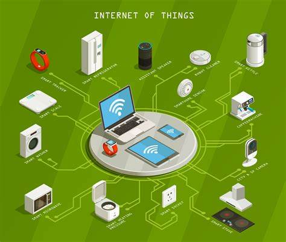
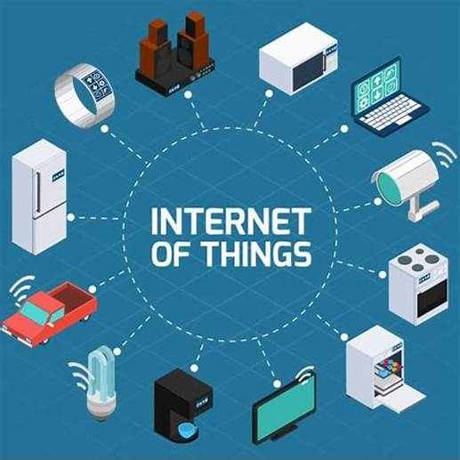
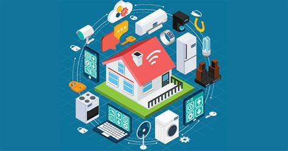
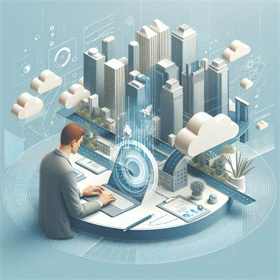
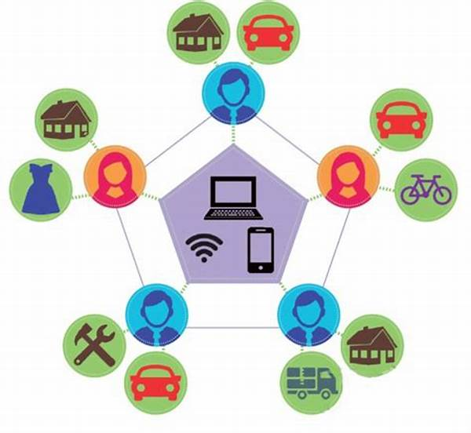
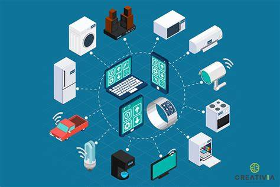
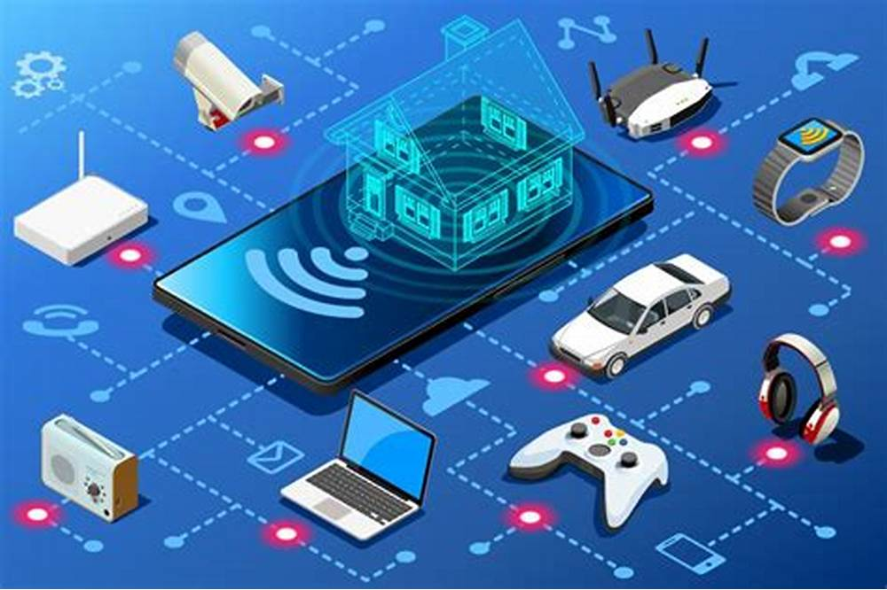

Impulsamos industrias, nuestra misión es tu éxito.
INICIO
INSTALACIÓN DE CAMARAS
DESARROLLO DE SOFTWARE
MANTENIMIENTO Y SOPORTE DE REDES
INTERNET DE LAS COSAS
MANTENIMIENTO PREVENTIVO Y CORRECTIVO DE COMPUTO
COMPRA Y VENTA DE COMPUTADORES
Internet de las cosas
Explora el futuro con nuestras soluciones de Internet de las Cosas (IoT). Diseñamos y desarrollamos sistemas inteligentes que conectan dispositivos y procesos
para optimizar tus operaciones, tanto en el hogar como en entornos industriales. Desde automatización en tiempo real hasta monitoreo remoto avanzado, nuestras
tecnologías te ofrecen una gestión más eficiente y una experiencia integrada. Permítenos transformar tu entorno con la conectividad y la inteligencia que necesitas
para un mundo interconectado. ¡Dale vida a tus ideas con nuestras soluciones de IoT y sé parte del cambio hacia un futuro inteligente!
Automatización del Hogar y Oficinas

- Control de iluminación y electrodomésticos de manera remota, optimizando el consumo en oficinas y hogares.
- Gestión inteligente de termostatos y sistemas de calefacción para eficiencia energética en espacios corporativos y residenciales.
- Sistemas de seguridad y vigilancia automatizados, ideales para proteger propiedades empresariales y viviendas.
- Monitoreo y control de cerraduras inteligentes para accesos seguros en hogares y oficinas.
- Integración con asistentes virtuales para comandos de voz, simplificando tareas en entornos profesionales y domésticos.
Monitoreo Remoto Empresarial y Doméstico

- Monitoreo de condiciones ambientales (temperatura, humedad, etc.), mejorando el bienestar en hogares y oficinas.
- Seguimiento de flotas y activos en movimiento, garantizando la seguridad de vehículos empresariales.
- Supervisión de redes de distribución energética para industrias y grandes complejos residenciales.
- Gestión remota de sistemas de riego agrícola, optimizando recursos en entornos comerciales y residenciales.
- Control de calidad a distancia en procesos industriales, manteniendo estándares altos de seguridad y eficiencia.
Sistemas de Salud Conectados para Empresas y Hogares

- Dispositivos médicos con monitoreo en tiempo real, adecuados para hogares y entornos de trabajo.
- Gestión remota de historiales médicos y datos de pacientes, mejorando la atención en clínicas y espacios personales.
- Control de dispositivos portátiles para el bienestar, monitoreando salud en trabajadores y familias.
- Integración de sistemas de atención domiciliaria para personas con necesidades especiales.
- Alarmas automatizadas para emergencias médicas, garantizando seguridad en espacios comerciales y residenciales.
Gestión de Ciudades y Hogares Inteligentes

- Optimización de tráfico y gestión de estacionamientos para empresas con sensores de flujo vehicular y disponibilidad de espacios.
- Iluminación automatizada y eficiente, ideal para oficinas y urbanizaciones, que ahorra energía y mejora la seguridad.
- Soluciones de gestión de residuos, con alertas automáticas para optimizar la recolección de desechos en comunidades y complejos empresariales.
- Monitoreo de calidad del aire, tanto en interiores como exteriores, para asegurar un ambiente saludable en oficinas y áreas residenciales.
- Sistemas de seguridad con cámaras inteligentes y alertas en tiempo real, diseñados para proteger tanto hogares como entornos empresariales.
Nos especializamos en ofrecer soluciones avanzadas de Internet de las Cosas (IoT) adaptadas tanto para entornos empresariales como residenciales.
Nuestra tecnología permite automatizar procesos, mejorar la eficiencia energética y garantizar la seguridad en sus instalaciones, ya sea en su hogar
o en su empresa. Con nuestra experiencia en IoT, transformamos su espacio en un entorno inteligente y conectado que se adapta a sus necesidades diarias.
Desde el control remoto de luces y electrodomésticos hasta la gestión integral de la seguridad con sistemas de vigilancia avanzados, nuestras soluciones
le permiten tener un control total, optimizando el confort y la productividad. Equipos de última generación, monitoreo en tiempo real y dispositivos
personalizados aseguran que su inversión en tecnología sea eficiente y confiable, creando espacios más seguros, cómodos y energéticamente sostenibles.



Analizamos a fondo las necesidades específicas de cada cliente, ya sea para su hogar o empresa, con el fin de desarrollar soluciones IoT personalizadas que
maximicen la eficiencia y seguridad. Nuestras implementaciones abarcan desde sistemas de automatización del hogar que se integran sin esfuerzo en la vida
cotidiana, hasta redes empresariales complejas que mejoran la gestión operativa y reducen costos.
Con tecnología de vanguardia, proporcionamos dispositivos que se comunican entre sí y con usted en tiempo real. Imagine recibir alertas instantáneas sobre
situaciones críticas o poder controlar remotamente cada elemento de su entorno, asegurando que todo funcione de manera óptima y segura. Nos comprometemos a
mejorar la calidad de vida y los procesos empresariales mediante sistemas inteligentes y flexibles.
Para obtener una solución a la medida de sus necesidades, te invitamos a contactar con nuestro equipo de expertos.